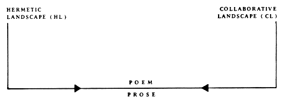

We undertook to co-author a book through a desire to transcend personality and its aggregate of habits, to sidestep these into what we hoped would be a more sensual intelligence informed by our studies of subatomic physics, its implied philosophy and methodology at play in the macrocosm around us, South Greece and France. We agreed on two rules: write every day, which, life being distracting or spectacular, translated to 4-5 out of 7; and don't look back til it's done. We wrote pieces together, wrote separately and revised together at day's end, composed aloud (Barthe's writing aloud), spoke to a tape recorder, one meditated and the other wrote in her aura. We put the first draft away for two years, and then, in a dramatic two week period, performed a drastic final draft.
BLACK HOLES, BLACK STOCKINGS, excerpts
|
The very perfume Kienholtz must have used in his environments on the 1950's--the slow music, the polyurethane men at the bar, or servicemen in the waiting room of a house of prostitution, memorabilia about Eisenhower--all on a brown and red carpet of roses. Your mother's letters at your bedside table, unopened, overpower the wilting cherry reds. She follows you to Europe with her drawl and plaint. I practice the flute, cascading cheerful melodies with low notes on the end. The Festival, the tinsel, the flash of light in the eyes of the well known and us, driven into the event by your departure. That day we heard of the terrorism and shootings and were sorry we had believed you were going for a rest. Not that you would be involved, but that once there would find consort among those wronged. We surfaced among costumes on the promenade, the faces of the hotels marking a period of history when architecture was sculpture: colonnade and white facings below black ivory domes, crystal high in the dining rooms' omphalos. We drank Sambuca under the celebrated sky, blacker and more riddled for your absence. It was your drink, and we sipped to the hard coffee bean, split like a nipple; we were surprised--very few people had heard of it, although it is not uncommon. |
She didn't think we were married in any traditional sense so didn't hesitate to apply first to one and then the other the awkward silences which her colorful beauty could be felt to fill, as in panavision, setting a slower mood for the spectator perhaps but quickening her pulse.
Don't leave,
she
didn't whisper, nor
stay with me,
but rather shifted her hair as one shifts an entire pose left to right close-up, taking a minute, triggering the free association where every promise lost or denied finds its place. Blue skies, tawny beach, sea-green and berry stain. By year's end she would bring us one of her first architecture assignments, in the manner of the Japanese masters, the arrangement of dots in disorder. Impressionable and expressive, she lined the corridors with butcher paper, unable to avoid herself and, hence, design--wool-bodies, lace, the infinite destinies of flakes, ceramic porosity, wormwood. She would hide sea, sand and boat by hanging the sheet upside down. Told to watch water boil, stray rain, to unrehearse them, she did it many times and in her mind, until by ear first fathomed disarray.
|

Olga Broumas's poetry collections include
Beginning with
O, a Yale Younger Poets Award winner, and
Pastoral Jazz.
She teaches at Freehand, Inc., a learning community of women writers and photographers which she helped to found, in Provincetown, Massachusetts.
Jane Miller's books of poems are Many Junipers, Heartbeats, and The Greater Leisures, a National Poetry Series selection. She is currently a Visiting Poet at the University of Iowa.
Jane Miller's books of poems are Many Junipers, Heartbeats, and The Greater Leisures, a National Poetry Series selection. She is currently a Visiting Poet at the University of Iowa.